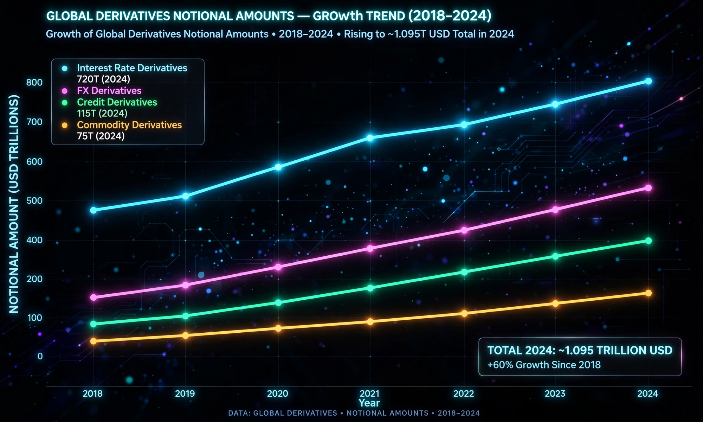

The derivatives market is the financial market for derivatives — financial instruments such as futures contracts, options, swaps, and forward contracts whose value is derived from the performance of an underlying asset, index, interest rate, or other reference entity. It is one of the largest financial markets in the world: the Bank for International Settlements has estimated the notional amount outstanding of over-the-counter (OTC) derivatives in the hundreds of trillions of US dollars, although gross market values are far smaller.
Market participants use derivatives chiefly for hedging (reducing exposure to price movements, such as an airline locking in fuel prices), speculation (taking a leveraged position on future price movements), and arbitrage (exploiting price discrepancies between related markets). Major participants include banks, hedge funds, pension funds, insurers, corporations, and governments.
Exchange-traded derivatives are standardized contracts traded on exchanges such as the CME Group, Eurex, and the Cboe Options Exchange, and are cleared through central counterparties that guarantee performance. OTC derivatives are privately negotiated between two parties; they offer customization but carry bilateral counterparty credit risk. After the 2008 financial crisis, reforms such as the Dodd–Frank Act in the United States pushed more standardized OTC contracts toward central clearing and exchange-like trading venues.
Derivatives played a central role in the 2008 financial crisis through leveraged exposure to mortgage-related securities and the failure of institutions such as AIG. Investor Warren Buffett famously called derivatives "financial weapons of mass destruction" in 2003, while defenders argue they improve risk-sharing and market efficiency.
Categories: Derivatives (finance) | Financial markets